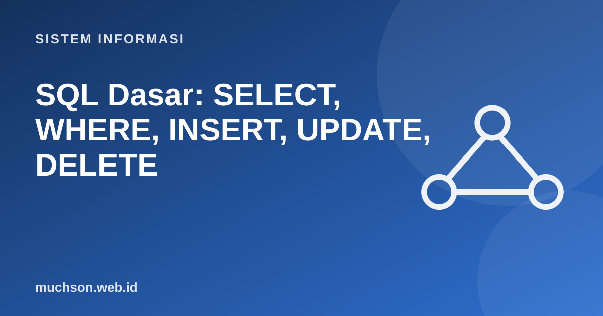

Beranda › Artikel › Sistem Informasi
Sistem InformasiSQL Dasar: SELECT, WHERE, INSERT, UPDATE, DELETE
SQL (Structured Query Language) adalah bahasa untuk bertanya dan mengubah data pada basis data relasional. Bahasanya deklaratif: Anda menyatakan data apa yang diinginkan, bukan bagaimana mengambilnya. Contoh di sini dijalankan sungguhan pada SQLite dengan satu tabel mahasiswa.
Sebaiknya sudah paham: konsep tabel dan baris

Setelah membaca dan mencoba materi ini, Anda mampu:
- membaca dan menulis SELECT dengan WHERE, ORDER BY, LIMIT
- memakai operator perbandingan, AND/OR, IN, BETWEEN, LIKE
- memahami NULL dan cara memeriksanya dengan IS NULL
- menambah, mengubah, dan menghapus data dengan INSERT, UPDATE, DELETE
- menghindari kesalahan fatal: UPDATE atau DELETE tanpa WHERE
Data latihan
import sqlite3
db = sqlite3.connect(":memory:")
db.executescript("""
CREATE TABLE mahasiswa (
nim TEXT PRIMARY KEY, nama TEXT NOT NULL, jurusan TEXT, angkatan INTEGER, ipk REAL
);
INSERT INTO mahasiswa VALUES
('A01','Ani','SI',2023,3.80), ('A02','Budi','TI',2022,3.10), ('A03','Citra','SI',2023,3.55),
('A04','Dewi','TI',2024,NULL), ('A05','Eko','SI',2022,2.90), ('A06','Fajar','MI',2024,3.40);
""")
for baris in db.execute("SELECT * FROM mahasiswa"):
print(baris)('A01', 'Ani', 'SI', 2023, 3.8)
('A02', 'Budi', 'TI', 2022, 3.1)
('A03', 'Citra', 'SI', 2023, 3.55)
('A04', 'Dewi', 'TI', 2024, None)
('A05', 'Eko', 'SI', 2022, 2.9)
('A06', 'Fajar', 'MI', 2024, 3.4)
SELECT dan WHERE
import sqlite3
db = sqlite3.connect(":memory:")
db.executescript("""
CREATE TABLE mahasiswa (nim TEXT PRIMARY KEY, nama TEXT NOT NULL, jurusan TEXT, angkatan INTEGER, ipk REAL);
INSERT INTO mahasiswa VALUES ('A01','Ani','SI',2023,3.80),('A02','Budi','TI',2022,3.10),('A03','Citra','SI',2023,3.55),
('A04','Dewi','TI',2024,NULL),('A05','Eko','SI',2022,2.90),('A06','Fajar','MI',2024,3.40);
""")
def q(sql):
print(">", " ".join(sql.split()))
for r in db.execute(sql): print(" ", r)
q("SELECT nama, ipk FROM mahasiswa WHERE jurusan = 'SI'")
q("SELECT nama FROM mahasiswa WHERE ipk >= 3.4 AND angkatan >= 2023")
q("SELECT nama FROM mahasiswa WHERE jurusan IN ('TI','MI')")
q("SELECT nama, angkatan FROM mahasiswa WHERE angkatan BETWEEN 2022 AND 2023")
q("SELECT nama FROM mahasiswa WHERE nama LIKE '%i'") # berakhiran i
q("SELECT nama, ipk FROM mahasiswa ORDER BY ipk DESC LIMIT 3")> SELECT nama, ipk FROM mahasiswa WHERE jurusan = 'SI'
('Ani', 3.8)
('Citra', 3.55)
('Eko', 2.9)
> SELECT nama FROM mahasiswa WHERE ipk >= 3.4 AND angkatan >= 2023
('Ani',)
('Citra',)
('Fajar',)
> SELECT nama FROM mahasiswa WHERE jurusan IN ('TI','MI')
('Budi',)
('Dewi',)
('Fajar',)
> SELECT nama, angkatan FROM mahasiswa WHERE angkatan BETWEEN 2022 AND 2023
('Ani', 2023)
('Budi', 2022)
('Citra', 2023)
('Eko', 2022)
> SELECT nama FROM mahasiswa WHERE nama LIKE '%i'
('Ani',)
('Budi',)
('Dewi',)
> SELECT nama, ipk FROM mahasiswa ORDER BY ipk DESC LIMIT 3
('Ani', 3.8)
('Citra', 3.55)
('Fajar', 3.4)
NULL: bukan nol dan bukan kosong
NULL berarti "tidak diketahui atau tidak ada". Perbandingan apa pun dengan NULL menghasilkan tidak diketahui, bukan benar atau salah.
import sqlite3
db = sqlite3.connect(":memory:")
db.executescript("""
CREATE TABLE m (nama TEXT, ipk REAL);
INSERT INTO m VALUES ('Ani',3.8),('Dewi',NULL),('Eko',2.9);
""")
print("ipk = NULL :", db.execute("SELECT nama FROM m WHERE ipk = NULL").fetchall()) # selalu kosong!
print("ipk IS NULL :", db.execute("SELECT nama FROM m WHERE ipk IS NULL").fetchall())
print("ipk != 3.8 :", db.execute("SELECT nama FROM m WHERE ipk != 3.8").fetchall()) # Dewi tidak ikut
print("COALESCE :", db.execute("SELECT nama, COALESCE(ipk, 0) FROM m").fetchall())
print("rata-rata (NULL diabaikan):", db.execute("SELECT AVG(ipk) FROM m").fetchone())ipk = NULL : []
ipk IS NULL : [('Dewi',)]
ipk != 3.8 : [('Eko',)]
COALESCE : [('Ani', 3.8), ('Dewi', 0), ('Eko', 2.9)]
rata-rata (NULL diabaikan): (3.3499999999999996,)
Mengubah data: INSERT, UPDATE, DELETE
import sqlite3
db = sqlite3.connect(":memory:")
db.executescript("""
CREATE TABLE m (nim TEXT PRIMARY KEY, nama TEXT, ipk REAL);
INSERT INTO m VALUES ('A01','Ani',3.8),('A02','Budi',3.1),('A03','Citra',3.55);
""")
db.execute("INSERT INTO m (nim, nama, ipk) VALUES ('A04','Dewi',3.0)")
db.execute("UPDATE m SET ipk = 3.2 WHERE nim = 'A02'")
db.execute("DELETE FROM m WHERE nim = 'A03'")
print(db.execute("SELECT * FROM m").fetchall())
cursor = db.execute("UPDATE m SET ipk = 4.0") # LUPA WHERE: mengubah SEMUA baris
print("baris terubah tanpa WHERE:", cursor.rowcount)
print(db.execute("SELECT * FROM m").fetchall())[('A01', 'Ani', 3.8), ('A02', 'Budi', 3.2), ('A04', 'Dewi', 3.0)]
baris terubah tanpa WHERE: 3
[('A01', 'Ani', 4.0), ('A02', 'Budi', 4.0), ('A04', 'Dewi', 4.0)]
Kebiasaan aman: tulis dulu SELECT ... WHERE ... untuk melihat baris yang akan terkena, baru ubah menjadi UPDATE atau DELETE. Di basis data produksi, jalankan di dalam transaksi (BEGIN ... ROLLBACK/COMMIT) dan pastikan ada cadangan.
Urutan penulisan dan urutan eksekusi
| Ditulis | Dijalankan | Fungsi |
|---|---|---|
| SELECT | ke-5 | Memilih kolom |
| FROM | ke-1 | Sumber tabel |
| WHERE | ke-2 | Menyaring baris |
| ORDER BY | ke-6 | Mengurutkan |
| LIMIT | ke-7 | Membatasi jumlah |
1. Tulis query untuk menampilkan nama mahasiswa SI dengan IPK di atas 3,5 diurutkan dari tertinggi.
2. Mengapa WHERE ipk != 3.8 tidak menampilkan mahasiswa dengan ipk NULL?
3. Tulis query untuk menaikkan IPK semua mahasiswa angkatan 2024 sebesar 0,1.
4. Apa beda DELETE FROM m dan DROP TABLE m?
- SELECT kolom FROM tabel WHERE kondisi ORDER BY ... LIMIT ...
- IN, BETWEEN, LIKE, AND/OR untuk kondisi; IS NULL untuk nilai kosong.
- INSERT, UPDATE, DELETE mengubah data: selalu periksa WHERE dan gunakan transaksi.
- Fungsi agregat mengabaikan NULL.
Tanya jawab
Apa bedanya SQL dan MySQL?
Apakah SQL peka huruf besar-kecil?
Bagaimana mencegah SQL injection?
Referensi
- SQLite Documentation: SQL As Understood By SQLite
- PostgreSQL Documentation: SQL Language
- W3Schools / SQLBolt: latihan SQL interaktif
- Ramez Elmasri dan Shamkant Navathe, Fundamentals of Database Systems (Pearson)